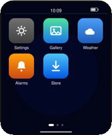
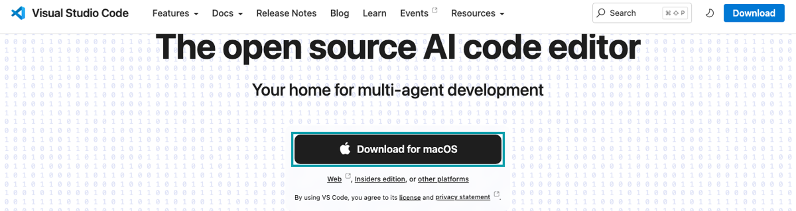
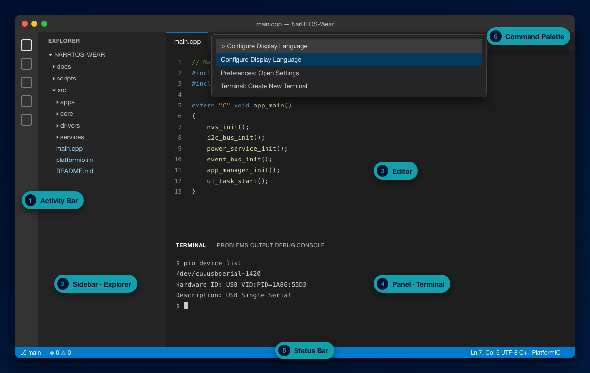
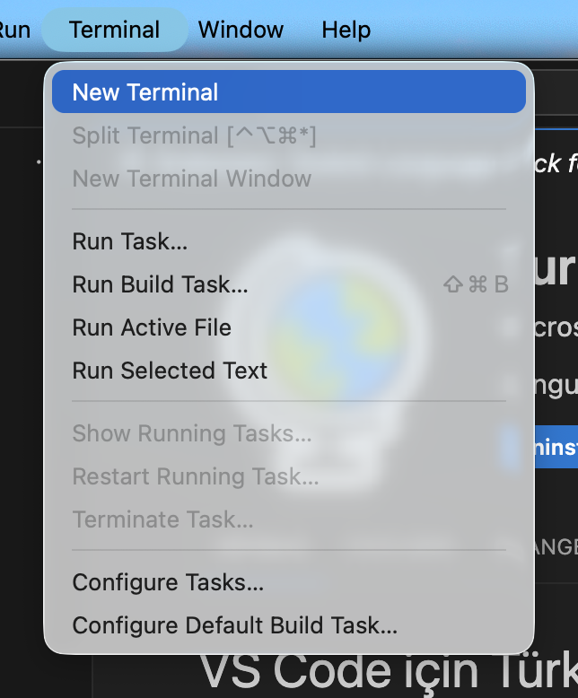
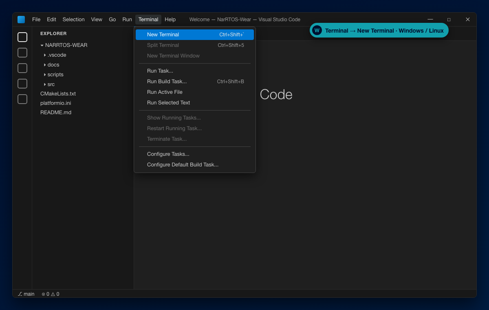

COREZZLE
VS Code Kurulumu
COREZZLEDökümantasyon Serisi
COREZZLE
VS Code Kurulumu
Windows, macOS ve Linux'ta sıfırdan kurulum: ilk açılış, terminal, eklentiler ve git.




VS Code nedir, ne değildir
- VS Code ücretsiz ve açık kaynak bir kod editörüdür; Windows, macOS ve Linux'ta çalışır.
- Dosyaları, terminali ve eklentileri tek bir pencerede toplar.
- Programları kendisi derlemez. Bu işi eklentiler ve terminaldeki araçlar yapar.
- Visual Studio ile karıştırmayın. O, yalnızca Windows'ta çalışan, ayrı ve çok daha büyük bir programdır.
Kurulum yaklaşık 10 dakika sürer ve hiçbir ön bilgi gerektirmez.
Sonunda VS Code açık, bir klasör içinde çalışır durumda ve terminal kullanıma hazır olur.
İndirin

code.visualstudio.com adresine gidin. Büyük Download düğmesi işletim sisteminizi kendisi tanır.
Düğmede sizde Windows ya da Linux yazabilir; bu görüntüde macOS görünüyor.
Kurun: Windows
- İndirilen .exe dosyasını çalıştırın. Lisansı kabul edin ve kurulum yerini olduğu gibi bırakın.
- Select Additional Tasks ekranında şu kutuları işaretleyin: Add "Open with Code" (dosya ve klasör için), Register Code as an editor ve Add to PATH.
- Install düğmesine, ardından Finish düğmesine basın. VS Code açılır.
"Open with Code" seçenekleri, herhangi bir klasöre sağ tıklayıp doğrudan VS Code ile açmanızı sağlar.
Kurun: macOS
- İndirilen .zip dosyasına çift tıklayın; Visual Studio Code uygulaması ortaya çıkar.
- Simgeyi Uygulamalar (Applications) klasörüne sürükleyin. İndirilenler klasöründe bırakmayın.
- Launchpad'den açın. "İnternetten indirilen uygulama" uyarısında Aç deyin.
- Terminalden code komutunu kullanmak için ⇧⌘P ile komut paletini açıp Shell Command: Install 'code' command in PATH seçeneğini çalıştırın.
Uygulamayı İndirilenler klasöründe bırakırsanız güncellemeler sorun çıkarır.
Kurun: Linux
- Ubuntu ve Debian'da .deb dosyasını indirip sudo apt install ./code_*.deb komutuyla kurun.
- Fedora ve RHEL'de .rpm dosyasını indirip sudo dnf install ./code-*.rpm komutuyla kurun.
- Snap kullanan dağıtımlarda sudo snap install code --classic komutu yeter.
.deb yöntemi Microsoft'un paket deposunu da ekler; sonraki güncellemeler apt ile gelir.
İlk açılış

Karşınıza Welcome sekmesi gelir. Koyu ya da açık tema seçebilirsiniz.
Arayüz İngilizcedir. Dokümanların çoğu İngilizce menü adlarını kullandığı için başlangıçta öyle bırakmak takibi kolaylaştırır.
Güncellemeler kendiliğinden iner. Sağ altta Restart to update yazısını görünce yeniden başlatın.
Türkçe istiyorsanız

Soldaki dikey şeritteki dört kare simgesi Extensions görünümünü açar. Kısayolu Ctrl, Shift ve X tuşlarıdır.
Arama kutusuna Turkish Language Pack yazın. Microsoft'un paketi çıkar; mavi Install düğmesine basın.
Dili değiştirin

Sağ altta dil değişikliği sorusu çıkar. Change Language and Restart deyin; VS Code Türkçe açılır.
Soru çıkmadıysa Ctrl, Shift ve P ile komut paletini açın, Configure Display Language yazın ve Türkçe'yi seçin.
Pencereyi tanıyın

1 numaralı Activity Bar görünümler arasında geçiş sağlar. 2 numaralı Sidebar seçili görünümün içeriğini, Explorer'da dosya ağacını gösterir.
3 numaralı Editor dosyaları sekmeler halinde açar. 4 numaralı Panel terminali, hataları ve çıktıları barındırır.
5 numaralı Status Bar satır numarası, dosya türü ve git dalını gösterir. 6 numaralı Command Palette ile her komuta adını yazarak ulaşırsınız.
Bir klasör açın (macOS)

VS Code dosyalarla değil klasörlerle çalışır. File menüsünden Open Folder ile proje klasörünüzü seçin.
"Do you trust the authors?" diye sorabilir. Kendi projeleriniz için Yes deyin.
Bir klasör açın (Windows / Linux)

Windows ve Linux'ta menü şeridi pencerenin içinde, en üsttedir. File menüsünden Open Folder'ı seçin.
Daha önce açtığınız klasörlere File menüsündeki Open Recent ile geri dönersiniz.
Terminali kullanın (macOS)

Terminal menüsünden New Terminal, alt panelde bir terminal açar. Kısayolu Ctrl ve ` tuşlarıdır.
Terminal, o an açık olan klasörün içinde başlar. Komutları başka bir yere gitmeden doğrudan yazarsınız.
Terminali kullanın (Windows / Linux)

Windows'ta PowerShell, macOS'ta zsh, Linux'ta bash çalışır.
Sağ üstteki artı işareti ikinci bir terminal açar. Yanındaki ok menüsünden Select Default Profile ile varsayılan kabuğu değiştirebilirsiniz.
Eklentiler

Dil desteği, tema ve araç entegrasyonu gibi her şey eklentiyle gelir. Extensions görünümünde arayıp Install deyin.
Kullandığınız dilin resmi eklentisi başlangıç için yeter. Diğerlerini ihtiyaç doğduğunda kurun.
Bir proje kendi eklentisini önerirse bu balon çıkar. Projenin dökümanı ne diyorsa onu yapın; emin değilseniz kapatın.
Git ile birlikte
- Source Control görünümü ve çoğu proje, git programının kurulu olmasını bekler.
- Windows'ta git-scm.com/download/win adresinden kurulum dosyasını indirin ve bütün ekranlarda Next deyin.
- macOS'ta terminale xcode-select --install yazın. Apple'ın komut satırı araçları git'i de içerir.
- Linux'ta sudo apt install git komutu yeter.
- Kurulumdan sonra VS Code'u tamamen kapatıp yeniden açın.
VS Code "Git not found" uyarısı veriyorsa git'i kurun ve uygulamayı yeniden başlatın.
Sık karşılaşılan sorunlar
- Mac'te "Apple cannot check it for malicious software" uyarısı çıkarsa uygulamaya sağ tıklayıp Open deyin. Bir kez yeter.
- Windows'ta terminal code komutunu tanımıyorsa kurulumda Add to PATH işaretlenmemiştir. Terminali yeniden açın; gerekirse kurulumu tekrar çalıştırın.
- Mac'te code komutu yoksa ⇧⌘P ile paleti açıp Shell Command: Install 'code' command in PATH seçeneğini çalıştırın.
- "Git not found" uyarısı için git'i kurun ve VS Code'u yeniden başlatın.
- Yazılar çok küçük ya da büyükse View menüsünden Appearance, ardından Zoom In ya da Zoom Out seçin.
Yanlışlıkla kapattığınız bir paneli View menüsünden ya da komut paletine adını yazarak geri getirebilirsiniz.
COREZZLE
VS Code hazır.
NarRTOS projesini VS Code'da açmak için NarRTOS için VS Code Kurulumu dökümanına geçin. corezzle.com
İzlediğiniz için teşekkürler
Sıradaki videoSıradaki video
Oynatma listesiOynatma listesi
Abone olunYeni bölümlerden haberdar olun
corezzle.com · github.com/corezzle/NarRTOS-Wear